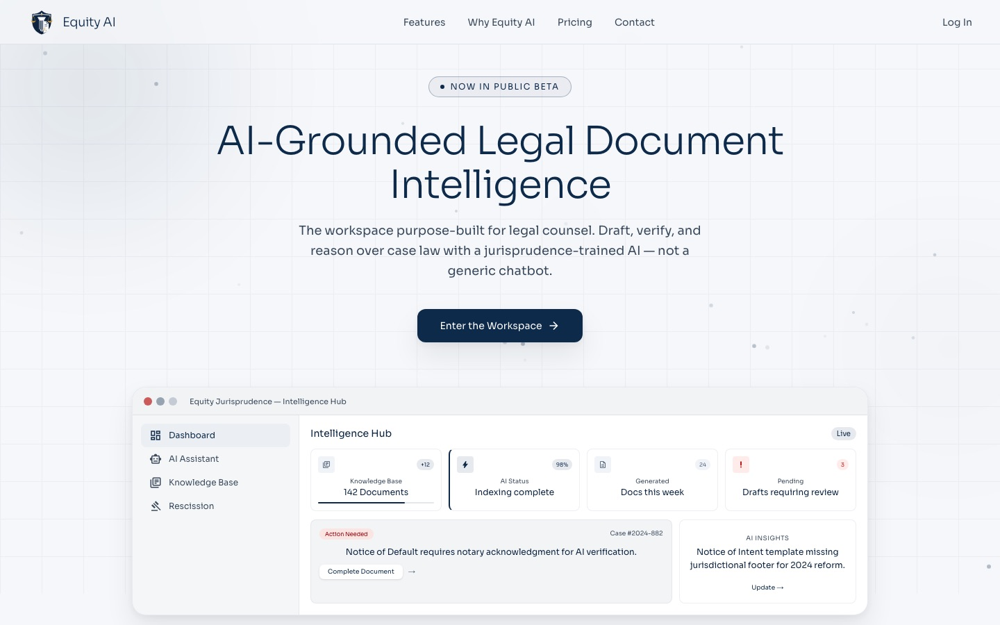

WORK OVERVIEW 06 · LEGAL DOCUMENT AI
A complete document workspace.
A full-stack workspace for a legal firm: a bilingual AI assistant that cites its sources, PDF packages put back in order with human review, and signed, stamped notices.
- My work
- Full-stack & document AI engineering
- Context
- Product Partnerships
- Scope
- Legal firm · Jul 2026 – Aug 2026
- Focus
- Cited answers & PDF automation
Turn complex document work into a usable product.
THE CONTEXT
The work.
A legal firm works with large PDF packages, repetitive notices, signatures, and legal questions that a generic chatbot can’t answer reliably. I built the product end to end, a Next.js workspace and a FastAPI backend, so research, document preparation, and review happen in one place.
MY CONTRIBUTION
Where I contributed.
- Built an AI legal assistant that answers in English or Spanish from the firm’s own library (law textbooks, case files, lecture recordings, and a legal dictionary), streams its response, and cites the exact sources it used.
- Automated the review of large, unordered PDF packages: an AI pipeline on AWS Lambda and SQS reads each page’s identifiers, puts the pages back in order, and flags conflicts for staff approval before anything is used.
- Turned approved records into ready-to-send legal notices: generated from templates, signed electronically, and stamped on every page.
- Built an in-browser stamp editor: drag, scale, and rotate a stamp, preview it, and apply it to every page.
- Built the workspace itself: upload, preview, versioning, ownership checks, paginated lists, and download, backed by 176 automated tests across frontend and backend.
BY THE NUMBERS
The scale.
- 2
- languages supported by the assistant: English and Spanish
- 4
- kinds of source material the assistant cites
- 176
- automated tests across frontend and backend
- 1
- workspace for research, generation, signing, and stamping
TOOLS & TECHNOLOGIES
The stack.
- Frontend
- Next.js 16ReactTypeScriptTailwind CSS 4PDF.js
- Backend
- Python 3.12FastAPISQLAlchemy (async)PydanticPyMuPDFLibreOffice
- Data
- PostgreSQLQdrantRedis / ValkeyAmazon S3
- AI
- Amazon BedrockAnthropic ClaudeCohere EmbedRAG
- Cloud & quality
- AWS LambdaAmazon SQSAWS AmplifyGitHub ActionspytestVitest
WHAT THE WORK SUPPORTS
The value.
- Answers come with their sources, so users can check them.
- Document preparation moves from manual copy-and-paste to review and approve.
- Upload, research, generation, signing, and stamping happen in one product.
THE PRODUCT
See it live.

Public overview.
This page summarizes my contribution and the tools I used at a high level. Proprietary implementation details, company and partner data, and internal documentation are not disclosed.